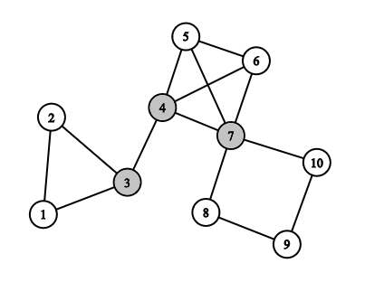
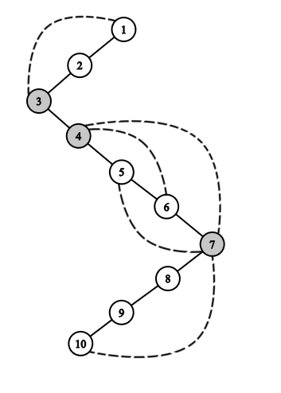

MAB 368, Algoritmos e Grafos - 2019/2
Determinando Articulações em um Grafo
Descrição
Uma articulação é um vértice que, se removido do grafo, aumenta o seu número de componentes conexas.

No grafo acima, os vértices 3, 4 e 7 são articulações
A Ideia do Algoritmo
O algoritmo utiliza a árvore de profundidade obtida através da busca. Considerando a imagem anterior, teríamos a seguinte ABP, considerando que r = 1:

Define-se lowpt(v) como o vértice mais próximo da raíz obtido através de um caminho descendente em T tomado a partir de v, passando por no máximo uma aresta de retorno. Para o grafo do nosso exemplo, teríamos a seguinte classificação do lowpt de cada vértice:
| v |
1 |
2 |
3 |
4 |
5 |
6 |
7 |
8 |
9 |
10 |
| lowpt(v) |
1 |
1 |
1 |
4 |
4 |
4 |
4 |
7 |
7 |
7 |
Temos o seguinte teorema:
Seja G(V, E) um grafo conexo e T uma árvore de profundidade de G. Um vértice v pertencente a V(G) é uma articulação se e somente se:
- v é a raíz de T e possui mais de um filho ou
- v não é raíz de T e é pai de pelo menos um demarcador.
Algoritmo: DFS_Determinando_Articulacoes
Observação: O algoritmo é uma extensão da busca em profundidade.
Em negrito, estão as novas alterações que estamos fazendo com a finalidade de obter novas informações sobre o grafo.
Observe também as adições a VISITE1 e VISITE2.
Consideramos ainda que:
- φ(v) = número de filhos de v
- isDemarcador(v) = guarda se o vértice é demarcador
- isArticulacao(v) = guarda se o vértice v é articulação
Entrada: Grafo G = (V, E) conexo e raíz de busca r ∈ V(G)
Saída: Listagem de todas as arestas de G
- tempo_entrada ← 0
- tempo_saida ← 0
- Para todo v ∈ V(G), faça:
- c(v) ← 0
- lowpt(v) ← v
- φ(v) ← 0
- isDemarcador(v) ← FALSE
- isArticulacao(v) ← FALSE
- c(r) ← 1
- nível(r) ← 0
- PE(r) ← tempo_entrada
- π(r) ← r
- P ← {r}
- Enquanto P ≠ ∅, faça:
- Seja v ∈ P
- se existe w ∈ Adj(v) com vw não visitada:
- se c(v) = 0, então:
- c(w) ← 1
- tempo_entrada ← tempo_entrada +1
- PE(w) ← tempo_entrada
- P ← P ∪ {w}
- VISITE1(vw)
- senão, VISITE2(vw)
- senão:
- c(v) ← 2
- Para cada w em Adj(v):
- se π(w) = v e nível(lowpt(w)) < nível(lowpt(v)), então: lowpt(v) ← lowpt(w)
- se v ≠ raíz e lowpt(v) = v ou lowpt(v) = π(v):
- isDemarcador(v) ← TRUE
- se π(v) ≠ raíz e isDemarcador(v) = TRUE, isArticulacao(π(v)) ← TRUE
- tempo_saida ← tempo_saida + 1
- PS(v) ← tempo_saida
- P ← P \ {v}
- se φ(r) > 1, isArticulacao(r) ← TRUE
VISITE1: (Visita aresta de árvore)
- φ(v) ← φ(v) + 1
- π(w) ← v
- nível(w) ← nível(v) + 1
- vw ← Aresta de Árvore
VISITE2: (Visita aresta não de árvore = fronde)
- vw ← Fronde
- se π(v) ≠ w, então:
- se nível(lowpt(v)) > nível(w):
- lowpt(v) ← w
Complexidade
Complexidade de Espaço: O(n+m)
Complexidade de Tempo: O(n+m)